Executive Summary
分类采用四类:
- A 类：已有论文利用观测结果得到金属梯度/emission line map;
- B 类：还没有 published 关注金属梯度/line map的非lensed galaxy;
- C 类：还没有 published 关注金属梯度/line map的lensed galaxy;
- D 类：AGN/quasar/radio galaxy candidate,必须做 AGN subtraction。
1. Metallicity Indicators
| indicator | line ratio | strengths | caveats |
|---|---|---|---|
| N2 | [NII]6584/H\(\alpha\) | 单调; 距离近、无需消光改正; scatter大 | 受N/O比例影响 |
| O3N2 | ([OIII]5007/H\(\beta\))/([NII]6584/H\(\alpha\)) | 同上 | 低金属端失效 |
| R23 | ([OII]3727+[OIII]4959,5007)/H\(\beta\) | 谱线强 | double value degeneracy |
| R3 | [OIII]5007/H\(\beta\) | 需要的line少，scatter小 | 简并问题 |
| O2/R2 | [OII]3727/H\(\beta\) | 同上 | Dust correction; [OII] can be weak. |
| O32 | [OIII]4959,5007/[OII]3727 | 可以打破简并 | 对电离也敏感，不适合作为唯一指标 |
| Ne3O2 | [NeIII]3869/[OII]3727 | 距离近; 单调 | 对电离也敏感; |
| S2 | [SII]6717,6731/H\(\alpha\) | 同上 | scatter很大, 只能作为粗略估计 |
| Te/direct | [OIII]4363/[OIII]4959,5007 | Least calibration dependent. | [OIII]4363 is faint |
2. NIRSpec IFU Wavelength and Redshift Coverage
The ranges below use approximate NIRSpec IFU wavelength coverage and should be read as line-access windows, not sensitivity guarantees.
2.1 Grating/filter wavelength coverage
| grating/filter | wavelength range (micron) |
|---|---|
| PRISM/CLEAR | 0.60-5.30 |
| G140/F100LP | 0.97-1.89 |
| G235/F170LP | 1.66-3.17 |
| G395/F290LP | 2.87-5.27 |
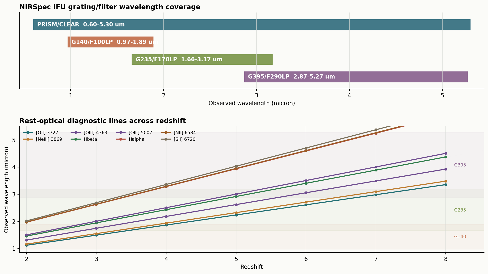
2.2 Single-line redshift coverage
| line | rest micron | PRISM/CLEAR | G140/F100LP | G235/F170LP | G395/F290LP |
|---|---|---|---|---|---|
| [OII]3727 | 0.3727 | 0.61-13.22 | 1.60-4.07 | 3.45-7.51 | 6.70-13.14 |
| [NeIII]3869 | 0.3869 | 0.55-12.70 | 1.51-3.88 | 3.29-7.19 | 6.42-12.62 |
| [OIII]4363 | 0.4363 | 0.38-11.15 | 1.22-3.33 | 2.80-6.27 | 5.58-11.08 |
| Hbeta4861 | 0.4861 | 0.23-9.90 | 1.00-2.89 | 2.41-5.52 | 4.90-9.84 |
| [OIII]5007 | 0.5007 | 0.20-9.59 | 0.94-2.77 | 2.32-5.33 | 4.73-9.53 |
| Halpha6563 | 0.6563 | 0.00-7.08 | 0.48-1.88 | 1.53-3.83 | 3.37-7.03 |
| [NII]6584 | 0.6584 | 0.00-7.05 | 0.47-1.87 | 1.52-3.81 | 3.36-7.00 |
| [SII]6717/31 | 0.6720 | 0.00-6.89 | 0.44-1.81 | 1.47-3.72 | 3.27-6.84 |
2.3 Indicator-set redshift coverage
| indicator set | required lines | PRISM/CLEAR | G140/F100LP | G235/F170LP | G395/F290LP | practical note |
|---|---|---|---|---|---|---|
| N2 | Halpha+[NII]6584 | 0.00-7.05 | 0.48-1.87 | 1.53-3.81 | 3.37-7.00 | Close line pair; AGN/shock/N/O caveat. |
| O3N2 | Hbeta+[OIII]5007+Halpha+[NII]6584 | 0.23-7.05 | 1.00-1.87 | 2.41-3.81 | 4.90-7.00 | Best standard strong-line gradient set for clean HII regions. |
| R23 | [OII]3727+Hbeta+[OIII]5007 | 0.61-9.59 | 1.60-2.77 | 3.45-5.33 | 6.70-9.53 | Double-valued; use O32/R3/O2 priors. |
| O32 | [OIII]5007+[OII]3727 | 0.61-9.59 | 1.60-2.77 | 3.45-5.33 | 6.70-9.53 | Ionization/hardness map, not O/H alone. |
| Ne3O2 | [NeIII]3869+[OII]3727 | 0.61-12.70 | 1.60-3.88 | 3.45-7.19 | 6.70-12.62 | Excitation/hardness diagnostic with auxiliary metallicity information; use with O32, R23 or photoionization modeling. |
| R3 | [OIII]5007+Hbeta | 0.23-9.59 | 1.00-2.77 | 2.41-5.33 | 4.90-9.53 | High-S/N excitation/oxygen ratio; auxiliary metallicity information. |
| O2 | [OII]3727+Hbeta | 0.61-9.90 | 1.60-2.89 | 3.45-5.52 | 6.70-9.84 | Low-ionization oxygen ratio; needs dust correction. |
| S2 | Halpha+[SII]6717/31 | 0.00-6.89 | 0.48-1.81 | 1.53-3.72 | 3.37-6.84 | Density/shock/DIG screen; weak at high z. |
| Te/direct | [OIII]4363+Hbeta+[OIII]5007+[OII]3727 | 0.61-9.59 | 1.60-2.77 | 3.45-5.33 | 6.70-9.53 | Direct-method anchor; [OIII]4363 S/N is limiting. |
3. A 类: published metallicity gradient/ line map
(1) Program 3045: Witnessing the Maturing of Teenage Galaxies at z = 4-6 with a Comprehensive UV-Optical-Sub-mm Benchmark Sample for the Community
Target.
- Proposal science target(s): DC-494763; DC-519281; DC-536534; DC-630594; DC-683613; DC-709575; DC-742174; DC-842313; DC-848185; DC-873321; DC-873756; VC-5100541407; VC-5100822662; VC-5100994794; VC-5101218326; VC-5101244930; DC-417567; VC-5110377875.
- Physical type: main-sequence star-forming galaxy sample.
- Redshift: 4.4 < z < 5.7.
JWST setup.
- Instrument: NIRSpec/IFU. Grating/filter: G235M/F170LP; G395M/F290LP.
- Science Time: ~56.93h
- Available indicators: N2; O3N2; R23; R3; O2; Ne3O2; O32; S2.
Published results and properties.:
- Data/processing: JWST/NIRSpec IFU G235M/G395M (PID 3045,4265,1217,5974), ALMA [CII] 158 \(\mu\)m, NIRCam；IFU reduction，谱线拟合，分别利用Bayesian方法和线诊断方法得到金属梯度；使用的indicators: N2、R3、Ne3O2、O32、O2、S2
- Result: 得到了20个galaxy的gas-phase abundance gradients。整体梯度接近平坦且 median 略为正，median gradient 为 \(+0.039\pm0.010\ {\rm dex\ kpc^{-1}}\)；只有 3 个星系在 \(1\sigma\) 水平有 \(>0.05\ {\rm dex\ kpc^{-1}}\) 的正梯度，没有显著负梯度。不同 metallicity indicator 得到的梯度没有明显系统偏差。
- Properties: 给出 20 个 galaxies 的 physical properties，范围约为
\(\log(M_*/M_\odot)\sim9.19-10.90\)、\(\log({\rm
SFR})\sim1.07-2.75\)。下面两个table分别是性质信息和得到的金属梯度：
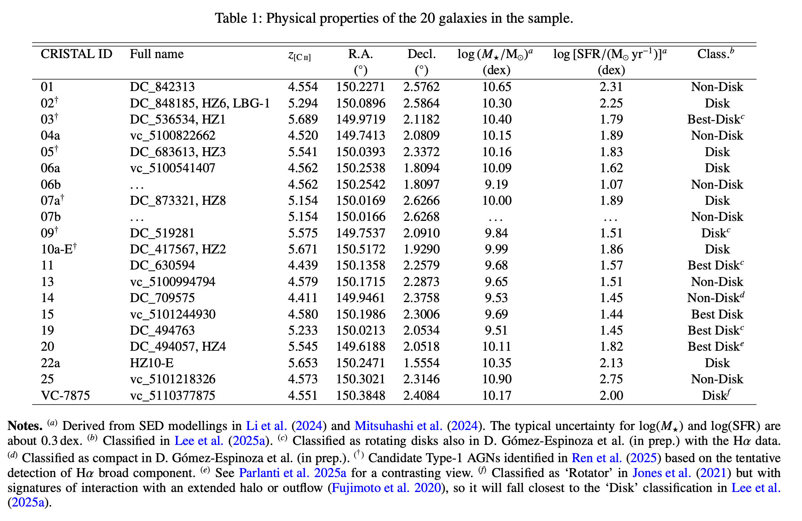
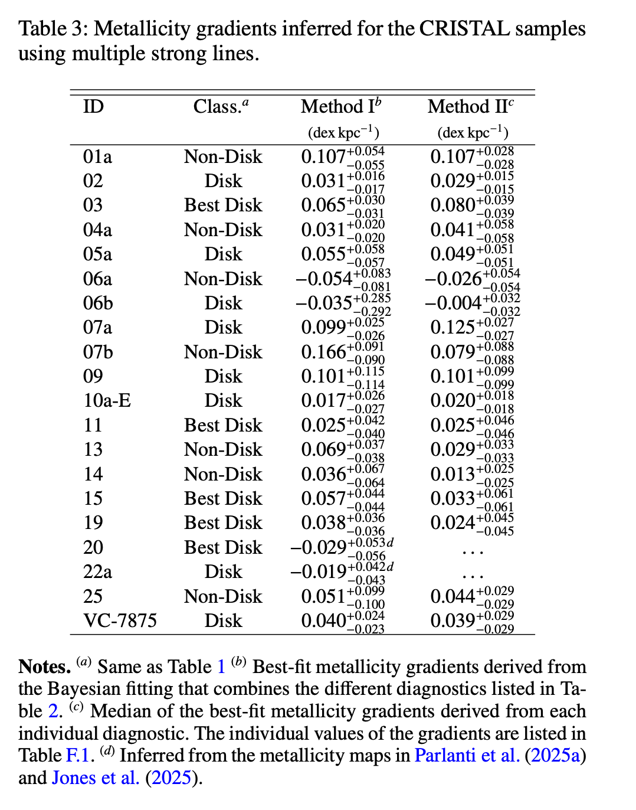
ALPINE-CRISTAL-JWST survey: revealing less massive black holes in high-redshift galaxies.
- Data/processing: JWST/NIRSpec IFU(3045)、NIRCam imaging、ALMA \([\mathrm{C\,II}]\,158\,\mu\mathrm{m}\)；在 NIRCam photometric peak aperture 提取 IFU spectrum，拟合 H\(\alpha\) narrow/broad components，用 broad H\(\alpha\) 判断 type-I AGN candidates，估计 \(M_{\rm BH}\) 和 \(\lambda_{\rm Edd}\)。
- Result: 这篇指出 ALPINE-CRISTAL 样本中有 7 个 type-I AGN candidates，因此后续做 IFU metallicity gradient 时需要显式处理 broad H\(\alpha\) 和 AGN contamination。文章的核心结论是这些 candidates 的 \(M_{\rm BH}\) 较低，整体不像许多高红移 over-massive BH，而更接近或低于本地 \(M_{\rm BH}-M_*\) 关系。
- Properties: 7 个 type-I AGN candidates；\(M_{\rm BH}\sim10^6-10^{7.5}\
M_\odot\)，host \(M_*\) 约 \(10^{9.5}-10^{10.5}\ M_\odot\)。AGN
candidates的性质：
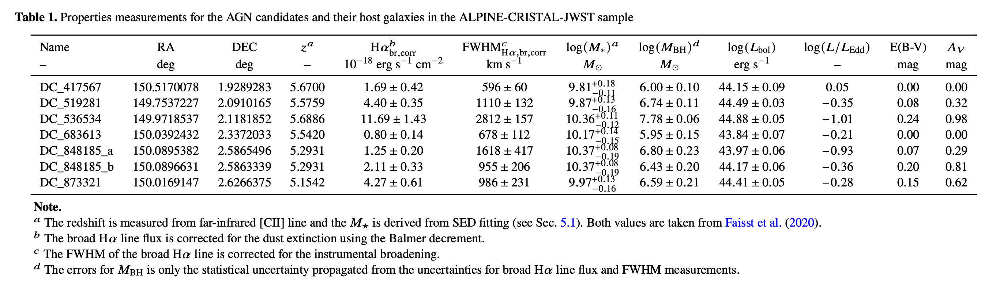
Program 5974: ORCHIDS: ORigin of the [C II] Halos In Distant Systems
Target.
- Proposal science target(s): Cristal-05; Cristal-07c; Cristal-09; Cristal-10; Cristal-21.
- Physical type: LBG.
- Redshift: \(5.1 < z < 5.7\).
JWST setup.
- Instrument: NIRSpec/IFU. Grating/filter: G395H/F290LP; G395M/F290LP.
- Science Time: ~43.18h
- Available indicators: N2; O3N2; R3; S2.
Published results and properties.
The ALPINE-CRISTAL-JWST Survey: JWST/IFU Optical Observations for 18 Main-Sequence Galaxies at z = 4 - 6. 和PID 3045的一样
(2) Program 1893: Galaxy Assembly at z > 6: Unraveling the Origin of the Spatial Offset between the UV and FIR Emission
Target.
- Proposal science target(s): BDF3299; COSMOS24108; A2744-YD4.
- Physical type:
star-forming、多成分的高红移星系系统，其中至少部分位于原星系团中.
- Redshift: 7.114; 6.361; 7.879.
JWST setup.
- Instrument: NIRSpec/IFU. Grating/filter: PRISM/CLEAR.
- Science Time: ~21.3h
- Available indicators: N2; O3N2; R23; R3; O2; Ne3O2; O32; S2.
Published results and properties.
Gas-phase metallicity gradients in galaxies at z~6-8.
- Data/processing: JWST/NIRSpec IFU, NIRCam/ALMA ancillary data；拟合发射线，radial/bin-based metallicity-gradient fitting；indicator：R2、O3、Ne3O2、S2、R23
- Result: 得到了二维emission line map和radial metallicity gradient。 主要结论是这些早期系统的 gradients 整体接近平坦，说明 merger、outflow 或 supernova-driven mixing 可能已经显著抹平早期化学结构。
- Properties: 样本的子结构覆盖 \(\log(M_*/M_\odot)\sim7.6-9.3\)、SFR \(\sim1-15\ M_\odot\ {\rm yr^{-1}}\)、\(12+\log({\rm O/H})\sim7.7-8.3\).
样本子结构的性质如下：
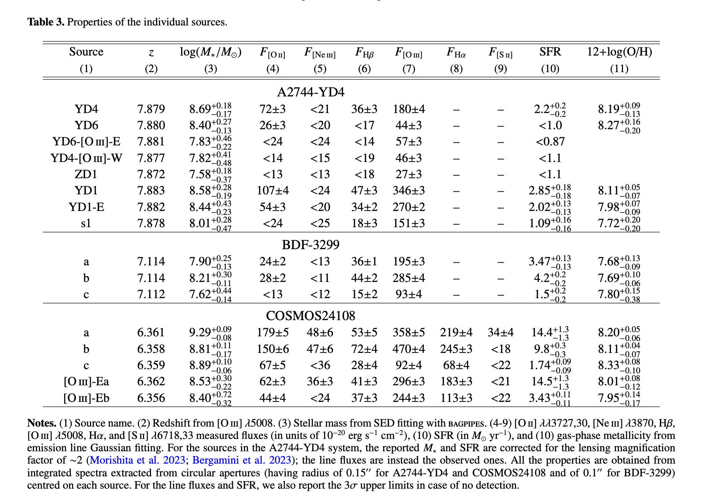
(3) Program 1840: ALMA [OIII]88um Emitters. Signpost of Early Stellar Buildup and Reionization in the Universe
Target.
- Proposal science target(s): J0235-0532; J0217-0208; SDF-LBG-ID34; RXC-J2248-ID3; COS-2987030247; SXDF-NB1006-2; BDF-3299; A2744-YD4; A1689-ZD1; J1211-0118; COS-3018555981; B14-65666.
- Physical type: [OIII]88um-selected active early galaxy sample.
- Redshift: 6 < z < 7.9
JWST setup.
- Instrument: NIRSpec/IFU + NIRCam imaging(F115W/F150W/F200W+redshift-dependent LW filters). Grating/filter: G395H/F290LP or G395M/F290LP.
- Science Time: ~33.9h
- Available indicators: target-dependent. For the lower-redshift targets, N2; O3N2; S2. For targets at \(z\gtrsim6.7\), R23; R3; O2; Ne3O2; O32. Exact usable sets should be selected target by target.
Published results and properties. 有一些研究金属丰度的论文，但没有专门计算金属梯度
- Data/processing: JWST/NIRSpec IFU， NIRCam imaging，ALMA，MIRI；line-map extraction，kinematic/outflow decomposition。
- Result: 得到emission line map。 发现[OIII]5008有宽线成分，解释为 ionized-gas outflow system；indicator: O2、R3、R23
- Properties: \(\log(M_*/M_\odot)=8.54^{+0.79}_{-0.22}\)；\(\log[{\rm SFR}/(M_\odot\,{\rm yr^{-1}})]=2.54^{+0.17}_{-0.71}\)；\(12+\log({\rm O/H})_{\rm R23}=8.07\pm0.12\)。
(4) Program 1567: Early Galaxy Assembly Uncovered with ALMA and JWST: A Remarkably UV and [CII] Bright, Strongly Lensed Sub-L* Galaxy at z=6.072
Target.
- Proposal science target(s): Group-Z6.3; Z6.1-6.2.
- Physical type: strongly lensed star-forming galaxy with dense clumps.
- Redshift: 6.072.
JWST setup.
- Instrument: NIRSpec/IFU + NIRCam imaging(F115W、F150W、F277W、F356W、F444W). Grating/filter: G395H/F290LP.
- Science Time: ~12.3h
- Available indicators: N2; O3N2; R3; S2; Te/direct.
Published results and properties.
Primordial rotating disk composed of at least 15 dense star-forming clumps at cosmic dawn.
- Data/processing: JWST/NIRSpec， NIRCam， ALMA， HST；IFU reduction，拟合发射线，得到line map，sed拟合，动力学分析，分析每个clump的性质。indicator: Te direct、R3、N2、O3N2、S2、O3S2。
- Result: 得到了emission line map。利用JWST图像把一个在HST image中看起来较平滑的小星系，分解成了至少 15 个非常致密的恒星形成团块，底层结构是一个有序旋转的气体盘
- Properties: 整体的性质
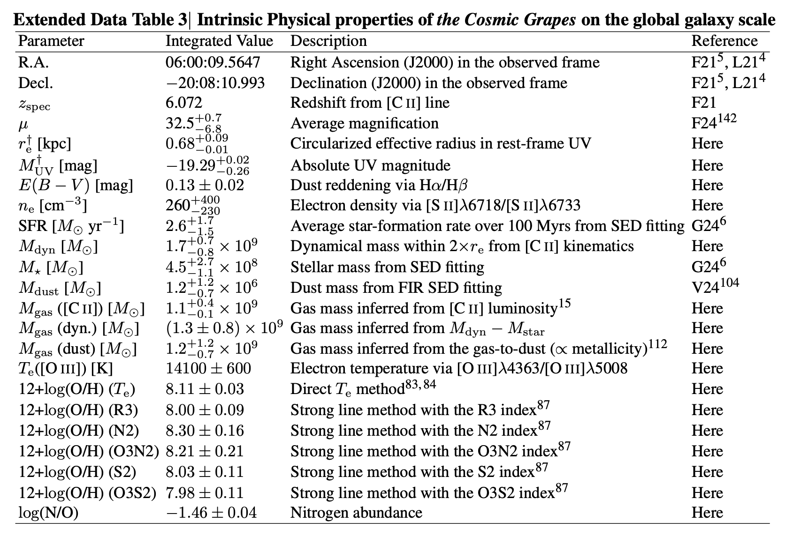
(5) Program 1554: Nebular Line Diagnostics in a Merger at Cosmic Dawn
Target.
- Proposal science target(s): Group-PJ308-21.
- Physical type: quasar host and two merging companions.
- Redshift: 6.234.
JWST setup.
- Instrument: NIRSpec/IFU. Grating/filter: G395H/F290LP.
- Science Time: ~7.8h
- Available indicators: N2; O3N2; R3; S2.
Published results and properties.
A quasar-galaxy merger at z~6.2: rapid host growth via accretion of two massive satellite galaxies.
- Data/processing: JWST/NIRSpec IFU， ALMA， HST；扣除了中心QSO的psf，做了line map和ne等性质的map，但没有量化梯度；indicator：Te direct、N2、R3、S2
- Result: 得到了emission line map。把 PJ308-21 解释为 quasar host 正在吸积两个 massive satellites 的 merger system。三个星系的ISM差异较大，quasar host 已经很大质量，但由于merger还会快速增长
- Properties: QSO host的 \(\log(M_*/M_\odot)\approx 11\)，\(Z_{\rm host}\approx 1.1\,Z_\odot.\)
(6) Program 1657: Anchoring z>6 Galaxy Metallicities Using Te and ne Diagnostics Enabled by JWST and ALMA Spectroscopy
Target.
- Proposal science target(s): J0218-0519; J0217-0208; J1211-0118.
- Physical type: z>6 star-forming galaxies, with ALMA [O III] \(88\,\mu{\rm m}\) detection.
- Redshift: 7.215, 6.204, 6.029.
JWST setup.
- Instrument: NIRSpec/IFU + MIRI/MRS + NIRCam imaging(F150W + F300M；F200W + F410M; F150W + F360M；F200W + F430M). Grating/filter: G235H/F170LP; G395H/F290LP; G395M/F290LP; MIRI MRS Channel 1 SHORT(A).
- Science Time: ~23.7h
- Available indicators: target-dependent. Oxygen-line diagnostics: R23; R3; O2; Ne3O2; O32; Te/direct. N2; O3N2; S2 are available only for targets with \(z\lesssim7.0\).
Published results and properties.
- Data/processing: NIRSpec/IFU + NIRCam imaging + ALMA \([\mathrm{O\,III}]\,88\,\mu{\rm m},[\mathrm{O\,III}]\,52\,\mu{\rm m}\); 发射线拟合,电子密度计算; indicator: Te direct、R23
- Result: 得到了line map。光学线测得的电子密度随红移上升，但是FIR 线测得的电子密度却没有明显演化，说明它们主要追踪不同的气体成分。 传统的Te方法得到的金属丰度可能被低估，更偏向trace较热、较高密度的气体，不能代表整个星系。
- Properties: metallicity分别为: \(Z_{\rm
gas}\approx 0.32\,Z_\odot, 0.20\,Z_\odot,0.66\,Z_\odot.\)
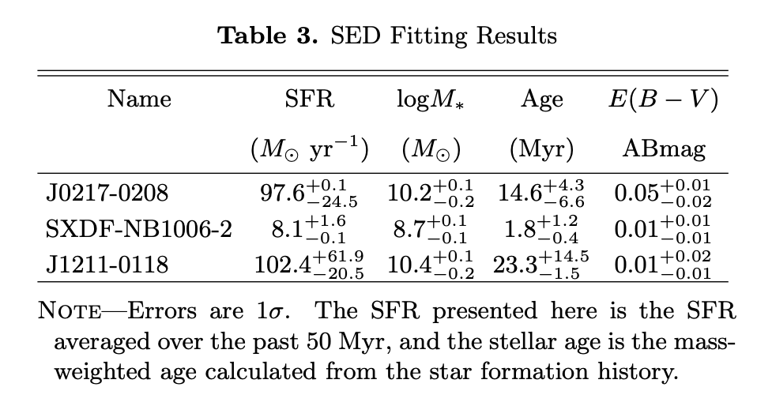
(7) Program 1827: NIRSpec Integral Field Spectroscopy of LyC-Leaking Galaxies
Target.
- Proposal science target(s): LACES94460; LACES104037.
- Physical type: LyC-leaking galaxy candidates.
- Redshift: 3.1
JWST setup.
- Instrument: NIRSpec/IFU. Grating/filter: G235M/F170LP.
- Science Time: ~24.1h
- Available indicators: N2; O3N2; R3; S2. The O32 value discussed in the related paper should be checked against the observing configuration or ancillary data before being attributed to this IFU setup.
Published results and properties.
Confirmation and Refutation of Lyman Continuum Leakers at z~3 with JWST NIRSpec/IFU.
- Data/processing: JWST/NIRSpec IFU (1827) + HST imaging; 确认LyC信号区域，拟合发射线，星族建模; indicator: Te direct、S2、O32
- Result: 得到了line map。确认了LyC leaker区域为LACES-10403，该区域由一个年龄仅约 \(5 \text{ Myr}\) 的极年轻星族驱动，merger 可能为 LyC photon escape 提供通道
- Properties:
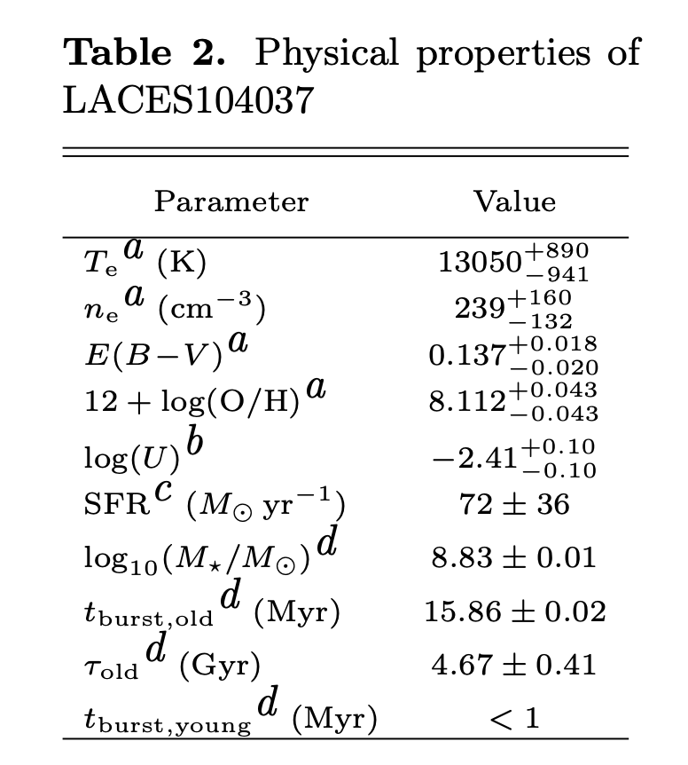
(8) Program 2913: Dissecting the Monsters: Resolved IFU Spectroscopy of the Most Massive Quiescent Galaxies at z>3
Target.
- Proposal science target(s): XMM-VID3-1120; XMM-VID3-2457; XMM-VID1-2075.
- Physical type: massive quiescent galaxy sample.
- Redshift: 3.4863, 3.4868, 3.4465.
JWST setup.
- Instrument: NIRSpec/IFU. Grating/filter: G235M/F170LP.
- Science Time: ~19.4h
- Available indicators: N2; O3N2; R23; R3; O2; Ne3O2; O32; S2.
Published results and properties.
- Data/processing: JWST/NIRSpec IFU(2913)，Keck spectrum， ALMA dust continuum; 由于是QG，主要拟合不同半径处的吸收谱; indicator: \([\alpha/\mathrm{Fe}]\)
- Result: 得到了[Fe/H] Map和金属梯度。三个星系中心都经历过强烈 starburst，中心区域均较年轻，并且 \(\alpha\)-enhanced
- Properties: \(\log(M_\star/M_\odot)>11.2\),
(9) Program 5293: Galactic Winds in the Early Universe: observing outflows in emission and absorption in a typical z~6 galaxy
Target.
- Proposal science target(s): MACS0308-ZD1.
- Physical type: strongly lensed clumpy z=6.2 star-forming galaxy( Cosmic Spear).
- Redshift: 6.208
JWST setup.
- Instrument: NIRSpec/IFU + NIRCam imaging(F115W, F150W, F200W, F250M, F300M, F410M). Grating/filter: G395H/F290LP; G235H/F170LP; G140H/F100LP.
- Science Time: ~10.64h
- Available indicators: N2; O3N2; R23; R3; O2; Ne3O2; O32; S2.
Published results and properties.
- Data/processing: JWST/NIRSpec IFU(5293)， NIRCam imaging， ALMA， HST；发射线提取，sed拟合；
- Result: 得到了line map。这篇的主要贡献是给强透镜系统的放大率、source-plane morphology 或 clump decomposition。IFU数据具体处理和金属丰度分析in prep
- Properties:
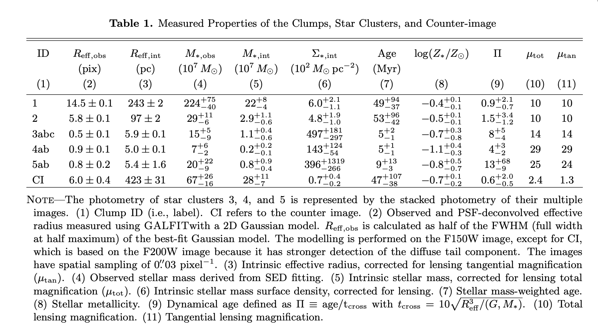
(10) Program 1970: Zooming into the Monster’s Mouth: Tracing Feedback from Their Hosts to Circumgalactic Medium in z=3.5 Radio-loud AGN
Target.
- Proposal science target(s): TNJ0205+2242; TNJ0121+1320; 4C03.24; 4C19.71.
- Physical type: z~3.5 radio-loud AGN with jet.
- Redshift: 3.50 < z < 3.59.
JWST setup.
- Instrument: NIRSpec/IFU. Grating/filter: G235H/F170LP.
- Science Time: ~24.5h
- Available indicators: N2; O3N2; R23; R3; O2; Ne3O2; O32; S2.
Published results and properties. 目前论文主要做的动力学，没有做metallicity
- Data/processing: JWST/NIRSpec， ALMA; 主要处理IFU数据，找companion并做了动力学建模
- Result: 有[O III]5007 channel maps，追踪暖电离气体，最后通过动力学建模得到速度弥散。四个 radio AGN 周围都发现了 companions，可能主要对应 minor mergers，触发 radio AGN，并影响 jet
- Properties: \(\log(M_\star/M_\odot)\)在10.82-11.27
(11) Program 2654: Kpc-scale Dual Supermassive Black Holes and Their Impact on Galaxy Formation at Cosmic Noon
Target.
- Proposal science target(s): SDSS J0841+4825; SDSS J0749+2255.
- Physical type: kpc-scale dual quasar system.
- Redshift: 2.95, 2.17.
JWST setup.
- Instrument: NIRSpec/IFU + MIRI/MRS. Grating/filter: G140M/F100LP; G235M/F170LP; MIRI MRS SHORT; MIRI MRS LONG.
- Science Time: ~16.4h
- Available indicators: N2; O3N2; R23; R3; O2; Ne3O2; O32; S2.
Published results and properties.
- Data/processing: NIRSpec IFU(2654)；主要对SDSS J0749+2255双quasar处理，双psf subtraction，做二维发射线map
- Result: 得到了Hα、[SII]、[NII] flux map。首次直接探测到双 quasar 周围的延展电离气体
- Properties: \(M_\star\sim10^{11}\ M_\odot\)
(12) Program 2959: Resolving early galaxy disks at z~8 with NIRSpec-IFS
Target.
- Proposal science target(s): 04590; 06355; 10612.
- Physical type: weak lensed early galaxy disk candidates.
- Redshift: 7.66.
JWST setup.
- Instrument: NIRSpec/IFU. Grating/filter: G395H/F290LP.
- Science Time: not reported.
- Available indicators: R23; R3; O2; Ne3O2; O32; Te/direct.
Published results and properties.
Exploring Spatially-Resolved Metallicities, Dynamics and Outflows in Low-Mass Galaxies at z ~ 7.6.
- Data/processing: JWST/NIRSpec IFU(2959)， NIRCam imaging; 发射线拟合，计算金属丰度，动力学分析; indicator：O2、R3、Ne3O2、Te direct
- Result: 得到了line map和金属梯度。使用strong-line得到的金属梯度~0，使用Te direct得到的金属梯度\(\nabla_Z=-0.11\pm0.03\ {\rm dex\,kpc^{-1}}\)，负梯度。作者认为可能原因包括: AGN ionization 污染了 strong-line ratios、strong-line calibration 不适用于 \(z\sim7.6\)、direct-\(T_{\rm e}\) 方法中的 constant-density assumption 过于简单。
- Properties: 对于06355和10612分别为：\(\log(M_\star/M_\odot)=8.72\pm0.04,8.08\pm0.04\)，\(SFR\sim54,15\,M_\odot\,{\rm yr}^{-1}\)
(13) Program 2566: Characterizing Stellar Mass Assembly and Physical Properties in the Brightest Galaxy in the Redshift>5 Universe
Target.
- Proposal science target(s): J1241+2219.
- Physical type: highly magnified z=5 lensed galaxy.
- Redshift: 5.045.
JWST setup.
- Instrument: NIRSpec/IFU + NIRCam imaging(F115W, F150W, F200W, F250M, F335M, F460M). Grating/filter: G395M/F290LP; G235M/F170LP.
- Science Time: ~19.4h
- Available indicators: N2; O3N2; R23; R3; O2; Ne3O2; O32; S2.
Published results and properties.
- Data/processing: NIRSpec/IFU(2566) + NIRCam imaging; 发射线提取，电离参数等性质分析; indicator：N2、O2、R23
- Result: 得到了 line map。 它虽然在 UV 波段非常亮，但当前发射线整体较弱，Balmer absorption 很强，说明它曾经经历强烈的恒星形成，之后快速衰退；局部低金属丰度可能来自新鲜气体流入。
- Properties: \(Z_{\rm
gas}\approx0.5\,Z_\odot\)，\(\log(M_*/M_\odot)=9.7\pm0.3\)
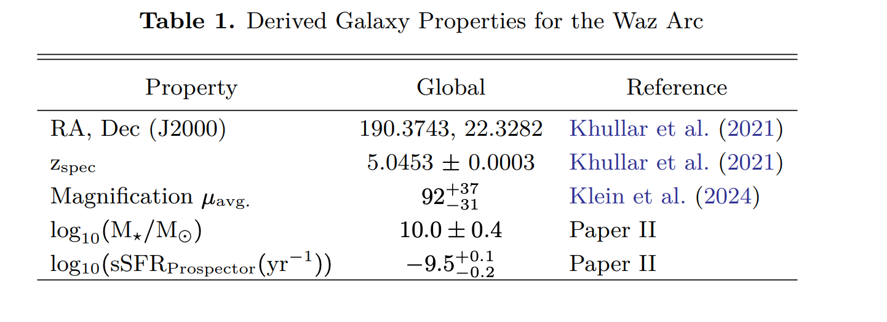
4. B 类: Non-lensed galaxy candidates without published metallicity gradients
(14) Program 1626: Achieving a Revolutionary Panchromatic View of Early Galaxy Growth through NIRSpec/IFU Observations of 12 Massive z>6.5 Galaxies with ALMA-derived [CII] Redshifts
Target.
- Proposal science target(s): REBELS-05; REBELS-08; REBELS-12; REBELS-14; REBELS-15; REBELS-25; REBELS-29; REBELS-32; REBELS-34; REBELS-38; REBELS-39.
- Physical type: UV 明亮、高质量恒星形成星系，都已经被 ALMA 探测到 [C II] \(158\,\mu{\rm m}\) 发射线.
- Redshift: 6.5 < z < 7.7.
JWST setup.
- Instrument: NIRSpec/IFU. Grating/filter: PRISM/CLEAR.
- Science Time: ~14.1h
- Available indicators: target-dependent. R23; R3; O2; Ne3O2; O32 are available across the sample. H\(\alpha\)-based diagnostics such as N2 are available only for the lower-redshift subset and should be selected target by target.
Published results and properties.
REBELS-IFU: evidence for metal-rich massive galaxies at z~6-8.
Data/processing: JWST/NIRSpec IFU(1626)，ALMA；提取光谱，金属丰度计算，scaling relation拟合(MZR和FMR)；indicators: R23、R3、N2、O32、O2、Ne3O2
Result: 只得到了整体的金属丰度，没有line map。显示这些高红移massive galaxies 已经有接近成熟的 metal enrichment
Properties:
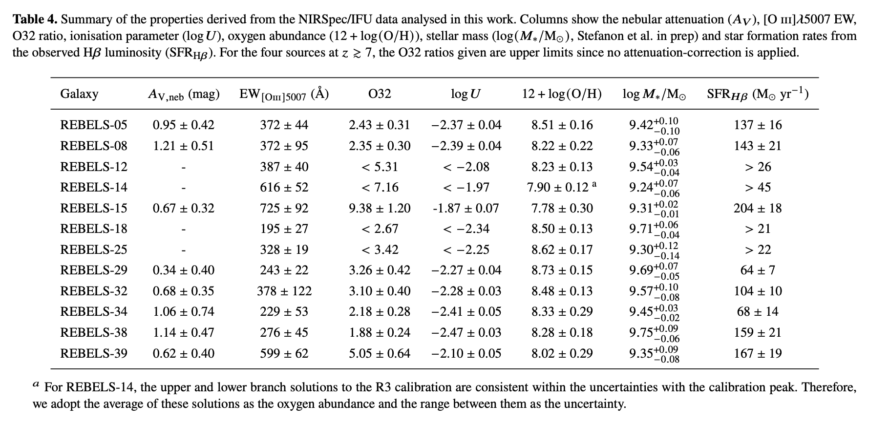
(15) Program 5572: Red Monsters: Kinematics of Two ‘Universe Breaking’, Ultra-Massive Galaxies in the First Gyr
Target.
- Proposal science target(s): S1; S2.
- Physical type: ultra-massive early red galaxy sample.
- Redshift: 5.58, 5.18
JWST setup.
- Instrument: NIRSpec/IFU. Grating/filter: G395H/F290LP.
- Science Time: ~16.8h
- Available indicators: R23; R3; O2; Ne3O2; O32.
Published results and properties. 下面的论文用到了这组观测，但没有关注金属丰度
- Data/processing: JWST/NIRSpec IFU(5572)，ALMA; 只做了谱线识别和sed，没有做动力学和金属丰度
- Result: S1之前在FRESCO grism中认为红移是5.58，得到IFU数据后发现其实是3.244。
- Properties: 更新后的S1，\(M=3.6\times10^{10}\,M_\odot\), \(SFR=72\,M_\odot\,{\rm yr^{-1}}\)
- Assessment for metallicity gradients: S1 修正为 \(z=3.244\) 后，G395 setup 错过本报告关注的主要 rest-optical lines，不作为 metallicity-gradient 推荐对象。
(16) Program 5761: Ionized Gas Kinematics of a z > 4 Main Sequence Disk Galaxy
Target.
- Proposal science target(s): ALMA-J081740.86+135138.2.
- Physical type: massive rotating DLA host disk.
- Redshift: 4.26.
JWST setup.
- Instrument: NIRSpec/IFU. Grating/filter: G395H/F290LP; G395M/F290LP.
- Science Time: ~4.98h
- Available indicators: N2; S2.
Published results and properties. 还没有用这组观测的论文，下面这篇是用另一组IFU配置得到的结果，文中说这组观测的数据in prep
GA-NIFS: A smouldering disk galaxy undergoing ordered rotation at z = 4.26.
- Data/processing: NIRSpec/IFU(4258)，ALMA; line fitting，metallicity，动力学建模; indicator：N2、S2
- Properties: \(Z_{\rm gas}\sim0.7\,Z_\odot,\ \log(M_\star/M_\odot)=10.6\pm0.2\)
(17) Program 6221: H-alpha mapping of a giant, prototypical Lyman-alpha blob at z=3
Target.
- Proposal science target(s): LAB1IFU1.
- Physical type: giant Lyman-alpha blob.
- Redshift: 3.1.
JWST setup.
- Instrument: NIRSpec/IFU. Grating/filter: G235M/F170LP.
- Science Time: ~24.85h
- Available indicators: N2; O3N2; R3; S2.
Published results and properties. 还没有用到观测的论文
- Properties: 总分子气体质量\((8.7\pm2.0)\times10^{10}\,M_\odot\), 7个确认的星系
5. C 类: Lensed galaxy
(18) Program 1864: The Formation of a Primeval Hyperstarburst Galaxy at z~6
Target.
- Proposal science target(s): SPT0346-52.
- Physical type: strongly lensed dusty star-forming galaxy.
- Redshift: 5.6559.
JWST setup.
- Instrument: NIRSpec/IFU + MIRI/MRS + MIRI imaging(F770W、F1280W、F1500W、F1800W、F2100W) + NIRCam imaging(F200W、F356W、F444W). Grating/filter: NIRSpec G395H/F290LP; MIRI MRS SHORT(A), MEDIUM(B).
- Science Time: ~18.9h
- Available indicators: N2; O3N2; R3; S2.
Published results and properties. 目前没有使用该观测数据的论文
- Properties: \(SFR\sim3000\text{--}4500\ M_\odot\,{\rm yr^{-1}},L_{\rm IR}\sim3.6\times10^{13}L_\odot\)
(19) Program 3433: Mapping star formation and feedback in clumpy galaxies at redshift ~5
Target.
- Proposal science target(s): MS1358-ARC; MACS0940-ARC; RCS0224-ARC.
- Physical type: clumpy strongly lensed star-forming galaxy.
- Redshift:4.92, 4.03, 4.88
JWST setup.
- Instrument: NIRSpec/IFU + NIRCam imaging. Grating/filter: G395H/F290LP; G235M/F170LP.
- Science Time: ~38.2h
- Available indicators: N2; O3N2; R23; R3; O2; Ne3O2; O32; S2.
Published results and properties. 目前没有用这组观测的论文
- Properties: \(M\sim10^6{-}10^9\ M_\odot\), UV-derived SFR: \(0.1{-}1\ M_\odot\,{\rm yr}^{-1}\)
(20) Program 5119: Resolving galaxy building blocks at high-z: the comprehensive picture of internal physical properties in an ultra-low-mass major merger system at z=5.2
Target.
- Proposal science target(s): ELG1+ELG2.
- Physical type: ultra-low-mass lensed major merger system.
- Redshift: 5.1.
JWST setup.
- Instrument: NIRSpec/IFU. Grating/filter: G235M/F170LP.
- Science Time: ~24.0h
- Available indicators: R23; R3; O2; Ne3O2; O32.
Published results and properties. 没有用这组观测的论文，但是有一个前置论文
JWST catches the assembly of a z~5 ultra-low-mass galaxy.
- Data/processing: NIRCam， HST
- Result: 作者认为 ELG1 和 ELG2 更可能是两个正在并合的星系，而不是一个星系内部的两个 clumps，因为 两个组件之间存在 Hα-bright bridge且rest-frame optical continuum 中可能有 tidal feature；
- Properties:
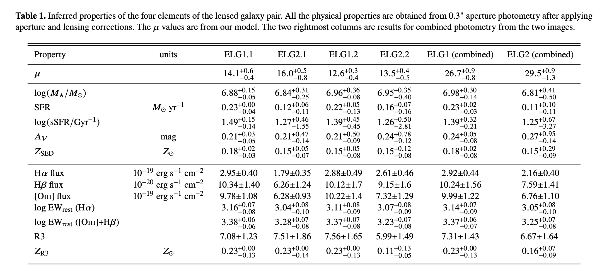
(21) Program 5883: The most distant Cosmos-Web strong gravitational lens: mass content in the foreground lens and dissecting the background source
Target.
- Proposal science target(s): CWeb-EinsteinRing.
- Physical type: strongly lensed background galaxy.
- Redshift: 5.1043.
JWST setup.
- Instrument: NIRSpec/IFU. Grating/filter: G235H/F170LP.
- Science Time: ~10.72h
- Available indicators: for the \(z=5.1043\) background source, R23; R3; O2; Ne3O2; O32.
Published results and properties. 还没有用这组观测的论文
- Properties: background source stellar mass \(\sim1.8\times10^{10}\,M_\odot\); IR-based SFR \(\sim60\,M_\odot\,{\rm yr^{-1}}\).
(22) Program 6405: Clumpy Relics: The First Spectroscopic Confirmation of Globular Clusters at z~3
Target.
- Proposal science target(s): UNCOVER35602-Clumps; UNCOVER35602-Host.
- Physical type: lensed massive QG with surrounding clumps, 可能是cluster candidate.
- Redshift: 2.53.
JWST setup.
- Instrument: NIRSpec/IFU. Grating/filter: PRISM/CLEAR.
- Science Time: ~20.27h
- Available indicators: N2; O3N2; R23; R3; O2; Ne3O2; O32; S2.
Published results and properties. 没有用到该观测论文
- Properties: Stellar mass约 \(10^6{-}10^7\,M_\odot\)
6. D 类: AGN / quasar / radio galaxy
(23) Program 1712: JWST Beholds the Multiple-merger Assembly of the Most Luminous Quasar
Target.
- Proposal science target(s): W2246-0526.
- Physical type: hyperluminous obscured quasar / merger.
- Redshift: 4.6.
JWST setup.
- Instrument: NIRSpec/IFU + MIRI/MRS. Grating/filter: NIRSpec G235H/F170LP + G395H/F290LP; MIRI MRS SHORT(A), MEDIUM(B), LONG(C).
- Science Time: ~23.3h
- Available indicators: N2; O3N2; R23; R3; O2; Ne3O2; O32; S2.
Published results and properties. 目前的论文只用了MIRI/MRS的, 且没有做金属丰度相关的
JWST observations and a model for the extremely luminous obscured quasar W2246-0526 at z=4.6.
- Data/processing: MIRI/MRS; 主要用MIRI的数据帮助做不同model的sed拟合, 没有做金属丰度的处理
- Result: 最终通过sed拟合得到了各种性质。sed拟合中需要加上hot polar-dust component效果才好
- Properties: SFR \(=360-2900\ M_\odot\,{\rm yr^{-1}}\)；\(M_{\rm BH}=(1.3-2.3)\times10^{10}\ M_\odot\)，\(M_{\rm *}\sim5\times10^{11}\ M_\odot\)。
(24) Program 2028: Mapping a Distant Protocluster Anchored by a Luminous Quasar in the Epoch of Reionization
Target.
- Proposal science target(s): J0910Q; J0910m0414_all_objects_new.
- Physical type: Luminous broad-absorption-line quasar.
- Redshift: 6.63.
JWST setup.
- Instrument: NIRSpec/IFU + NIRSpec/MOS. Grating/filter: NIRSpec IFU G395H/F290LP; PRISM/CLEAR for quasar-host continuum.
- Science Time: ~16.3h
- Available indicators: N2; O3N2; R23; R3; O2; Ne3O2; O32; S2.
Published results and properties. 有使用MOS的论文，但没有使用IFU
- Properties: \(M_{\rm BH}=(3.59\pm0.61)\times10^9\,M_\odot\), 位于 protocluster，富气体、尘埃; \({\rm FWHM}_{[\mathrm{C\,II}]\,158\,\mu{\rm m}}\approx930\ {\rm km\,s^{-1}}\).
(25) Program 2249: Monster in the Early Universe: Unveiling the Nature of a Dust Reddened Quasar Hosting a Ten-Billion Solar Mass Black Hole at z=7.1
Target.
- Proposal science target(s): J0038-0653.
- Physical type: dust-reddened high-redshift quasar.
- Redshift information from proposal_text: proposal redshift: 7.1; 7.06.
JWST setup.
- Instrument: NIRSpec/IFU + MIRI imaging(F560W, F770W, F1000W, F1130W, F1280W, F1500W, F1800W, F2100W, F2550W). Grating/filter: G395H/F290LP; G395M/F290LP; PRISM/CLEAR.
- Science Time: ~5.5h
- Available indicators: R23; R3; O2; Ne3O2; O32.
Published results and properties. 目前没有用到这个观测数据的论文，in prep
- Properties: 估计的\(M_{\rm BH}\gtrsim10^{10}\,M_\odot.\)
(26) Program 2457: Extreme Quasar Feedback at the Peak of the Galaxy Formation Epoch
Target.
- Proposal science target(s): SDSS-J221524.00-005643.8; SDSS-J083200.20+161500.3; SDSS-J083448.48+015921.1; SDSS-J123241.73+091209.3; SDSS-J121704.70+023417.1.
- Physical type: extremely red quasar outflow sample.
- Redshift: 2.40 < z < 2.59.
JWST setup.
- Instrument: NIRSpec/IFU. Grating/filter: G235H/F170LP.
- Science Time: ~20.9h
- Available indicators: N2; O3N2; R3; S2.
Published results and properties. 没有关注金属丰度/梯度的，主要看 quasar host 的连续谱
JWST IFU observations uncover host galaxy continua in extremely red and obscured quasar.
- Data/processing: JWST/NIRSpec IFU(2457, 1335)；quasar PSF subtraction,拟合形态并提取、拟合host一维光谱
- Result: 得到host的一维光谱、形态参数、性质。看到了quasar host的连续谱，发现quasar 与 host 中心经常不重合
- Properties:
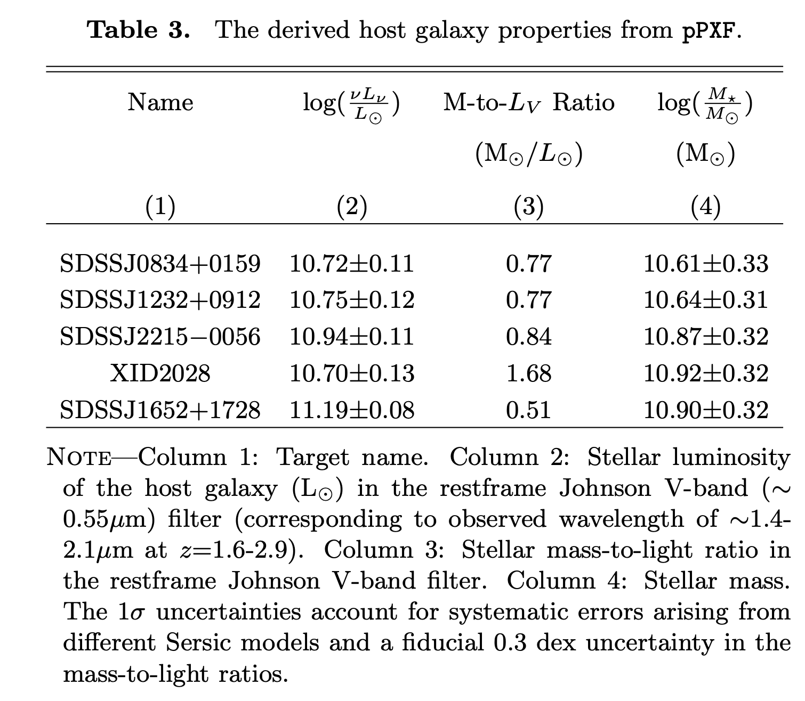
(27) Program 3079: BEES: Black hole Extended Emission Search
Target.
- Proposal science target(s): J1335+3533; J158-14; J2100-1715; J2229+1457.
- Physical type: luminous quasar,with small proximity zone.
- Redshift: 5.90 < z < 6.15.
JWST setup.
- Instrument: NIRSpec/IFU. Grating/filter: G395M/F290LP.
- Science Time: ~19.64h
- Available indicators: N2; O3N2; R3; S2.
Published results and properties. 没有专门测量金属丰度/梯度
BEES: Quasar lifetime measurements from extended rest-optical emission line nebulae at z ~ 6.
- Data/processing: JWST/NIRSpec IFU(3079, 1218)；psf subtraction，制作pseudo-narrowband image，估计lifetime
- Result: 得到了Hα、[OIII] pseudo-narrowband image。发现多数 quasars 当前 UV-bright phase 很短
- Properties: \(M_{\rm BH}\sim10^9\,M_\odot\)
(28) Program 3084: First spatially resolved characterization of a radio-driven outflow at z~6
Target.
- Proposal science target(s): P352-15.
- Physical type: radio-loud quasar with jet-driven outflow.
- Redshift : 5.83.
JWST setup.
- Instrument: NIRSpec/IFU. Grating/filter: G395H/F290LP.
- Science Time: ~13.97h
- Available indicators: N2; O3N2; R3; S2.
Published results and properties. 目前没有使用该观测数据的论文
- Properties: \(M_{\rm BH}\sim10^9\,M_\odot\)
(29) Program 5192: The first multi-scale and multi-phase characterization of black hole feedback at z>6
Target.
- Proposal science target(s): J0923+0402.
- Physical type: low-ionization broad-absorption-line quasar.
- Redshift: 6.626.
JWST setup.
- Instrument: NIRSpec/IFU. Grating/filter: G395M/F290LP.
- Science Time: ~7.1h
- Available indicators: N2; O3N2; R3; S2.
Published results and properties. 目前没有使用这个观测的论文
- Properties: \(\log(M_{\rm BH}/M_\odot)=9.4,\log(L_{\rm bol}/{\rm erg\,s^{-1}})=47.5\), 有延伸达 15 kpc、包裹着整个宿主星系的巨型 [CII] 气体晕
(30) Program 4877: The Host Galaxy, Environment, and Hot Dust Emission of the First Known Extremely-Luminous Obscured AGN at z>6
Target.
- Proposal science target(s): COS-87259.
- Physical type: obscured hyperluminous radio-loud AGN with dust-obscured starburst.
- Redshift: 6.853.
JWST setup.
- Instrument: NIRSpec/IFU + MIRI imaging(F560W, F770W,F1000W,F1130W,F1280W,F1500W,F1800W,F2100W,F2550W) + NIRCam WFSS(F410M). Grating/filter: PRISM/CLEAR.
- Science Time: ~7.21h
- Available indicators: N2; O3N2; R23; R3; O2; Ne3O2; O32.
Published results and properties. 目前没有使用该观测数据的论文
- properties: \(M_*\sim 10^{10.24}{-}10^{11.2}\,M_\odot,L_{IR}\sim 9\times10^{12}\,L_\odot,SFR\sim1300\,M_\odot\,{\rm yr^{-1}}\)
(31) Program 4912: Mapping the multi-phase outflows in z~6 luminous quasars
Target.
- Proposal science target(s): J1148+5251; P183+05; J1319+0950; J2310+1855; J2054-0005.
- Physical type: z~6 luminous quasar outflow sample.
- Redshift: 6.003 < z < 6.419.
JWST setup.
- Instrument: NIRSpec/IFU. Grating/filter: G395H/F290LP.
- Science Time: 15.32h
- Available indicators: N2; O3N2; R3; S2.
Published results and properties. 目前没有使用该观测数据的论文
- Properties: \(M_{\rm BH}\sim3.0\times10^9\,M_\odot\)
(32) Program 6074: The First Measurement of AGN Feedback in Action in the First Billion Years
Target.
- Proposal science target(s): COSMOSVLA-J100104.51+020203.6.
- Physical type: heavily obscured radio-loud AGN candidate.
- Redshift: 7.7.
JWST setup.
- Instrument: NIRSpec/IFU. Grating/filter: G395M/F290LP.
- Science Time: 6h
- Available indicators: R23; R3; O2; Ne3O2; O32.
Published results and properties. 目前没有使用该观测数据的论文
- Properties: \(\log(M_\star/M_\odot)=11.92\pm0.50,M_{\rm BH}\gtrsim6.4\times10^8\,M_\odot\)
7. Recommendation
A 类用于建立方法基准；B/C 类用于寻找新的 star-forming galaxy metallicity-gradient science；D 类需要注意 AGN 的影响
7.1 Published benchmarks
| program ID | role | why it matters |
|---|---|---|
| 3045 | Standard gas-phase gradient benchmark | 20 个 \(4<z<6\) main-sequence galaxies 已经得到 gas-phase abundance gradients，适合作为 reduction、line fitting 和 calibration comparison 的方法基准。 |
| 1893 | Early-universe resolved gradient benchmark | \(z\sim6-8\) systems 已有二维 emission-line maps 和 radial metallicity gradients，适合研究 merger、outflow 和 mixing 对早期化学结构的影响。 |
| 2959 | High-redshift calibration stress test | \(z\sim7.6\) low-mass galaxies 已有 resolved maps；strong-line gradient 接近 0，而 direct-\(T_{\rm e}\) 得到 \(\nabla_Z=-0.11\pm0.03\ {\rm dex\,kpc^{-1}}\)，可检验高红移 strong-line calibration。 |
7.2 B 类: non-lensed galaxy recommendations
| rank | program ID | target | useful indicators | why recommended | main caveat |
|---|---|---|---|---|---|
| 1 | 1626 | REBELS \(z>6.5\) galaxy sample | R23; R3; O2; Ne3O2; O32; target-dependent N2 | 非透镜高红移样本，适合统计性 resolved enrichment 分析，并可连接已有 integrated metallicity 结果。 | PRISM 分辨率有限；H\(\alpha\) diagnostics 只能用于较低红移子样本。 |
| 2 | 5761 | ALMA-J081740.86+135138.2 | N2; S2 | 旋转盘几何结构清楚，适合径向 profile 和 gradient 验证。 | indicator 较少，主要依赖 N2；需谨慎处理 N/O 和 calibration scatter。 |
| 3 | 6221 | LAB1IFU1 | N2; O3N2; R3; S2 | 适合研究 LAB 环境中的 line map、component contrast 和 abundance structure。 | 不是普通 disk-gradient 样本，应优先讨论环境和不同组件之间的差异。 |
7.3 C 类: lensed galaxy recommendations
| rank | program ID | target | useful indicators | why recommended | main caveat |
|---|---|---|---|---|---|
| 1 | 3433 | MS1358-ARC; MACS0940-ARC; RCS0224-ARC | N2; O3N2; R23; R3; O2; Ne3O2; O32; S2 | 多个 clumpy strongly lensed arcs，indicator 丰富，最适合 source-plane clump-scale abundance mapping。 | 需要 lens model、source-plane reconstruction 和 clump matching。 |
| 2 | 5119 | ELG1+ELG2 | R23; R3; O2; Ne3O2; O32 | 适合比较 merger components 和 H\(\alpha\)-bright bridge 的 abundance contrast。 | 不应强行解释为单一径向 gradient。 |
| 3 | 5883 | CWeb-EinsteinRing background source at \(z=5.1043\) | R23; R3; O2; Ne3O2; O32 | 高放大背景源适合 source-plane abundance mapping。 | 只讨论背景源；需要可靠 lens reconstruction。 |
7.4 D 类: AGN / feedback recommendations
| rank | program ID | target | useful indicators | why recommended | main caveat |
|---|---|---|---|---|---|
| 1 | 1712 | W2246-0526 | N2; O3N2; R23; R3; O2; Ne3O2; O32; S2 | Obscured quasar merger，适合比较 host、companions 和不同 ionization zones。 | 必须做 AGN subtraction等处理。 |
| 2 | 2028 | J0910Q protocluster system | N2; O3N2; R3; S2 | 适合研究 NLR、host 和 companions 的 ionization-abundance structure。 | Quasar PSF 和 NLR contamination 明显。 |
| 3 | 4877 | COS-87259 | R23; R3; O2; Ne3O2; O32 | PRISM/CLEAR 覆盖广，适合探索 obscured radio-loud AGN 的 abundance-ionization mapping。 | AGN 和 dusty starburst 污染需要联合建模。 |